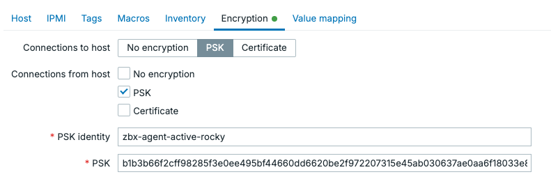
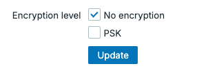
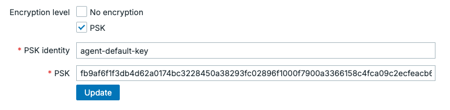

Securing the Zabbix agent with encryption
In chapter 4 we have learned how to set up our Zabbix agent in both the active and the passive mode. In an internal network, this might be all you need to do for your monitoring of Linux, Unix and Windows systems. But what if you need to monitor a Zabbix agent host over the internet or what if you'd just like to add an additional layer of security. This is where Zabbix agent encryption comes in.
There are two basic methods to encrypt your Zabbix agent and they apply to both passive and active agents. - Pre-shared keys - Certificates
Both provide a secure method of encrypting the communication between your Zabbix agent and Zabbix server or proxy. So let's dive into both of them.
Pre-shared keys
Whenever you start working with Zabbix agent encryption, pre-shared keys are the easiest method to provide an additional layer of security on your internal networks or encrypt internet connected agents. They are easy to understand and do not require maintenance, as they are a set and forget kind of encryption method.
The basis is simple, Zabbix agent uses a pre-shared key (PSK) identity and a PSK string. We set these up both on the Zabbix agent and Zabbix server side to encrypt the communication between them. If you are using Zabbix proxies, the Zabbix server will make sure the proxies know about the pre-shared keys (do not forget to encrypt proxy communication).
- PSK identity: A non-secret UTF-8 string.
- PSK string: A secret between 128 bit (16 Bytes, 32 character hexadecimal) and 2048 bit (256 Bytes, 512 character hexadecimal) string.
Important
The combination of the PSK identity and PSK string has to be unique. There can not be two PSKs with the same identity string but different values. We have to keep this in mind when setting up the PSK identity and I usually use something that cannot be duplicate like the hostname of the host we're encrypting.
Let's login to the CLI of a host with the Zabbix agent installed. We are going to edit the Zabbix agent 2 configuration file to allow for PSK encryption.
In the configuration file there are 4 parameters we need to edit. By default they aren't set, but we will set them as specified below.
Zabbix agent 2 configuration file encryption parameters
Linux CLI
I've used zbx-agent-active-rocky as the identity, as that is the hostname on my server and I will use unique PSK keys for each host. If you want to use a default identity/key pair you could use something like agent-default-key as the identity and use the same key on each host (less secure).
- TLSConnect: This parameter makes sure that when the Zabbix agent connects in active mode it will either use
unencrypted,psk, orcertto connect. - TLSAccept: This parameter makes sure that when the Zabbix agent is connected to in passive mode it will either use
unencrypted,psk, orcertto allow the connection. - TLSPSKIdentity: The plain text non-secret identity used for PSK encryption.
- TLSPSKFile: The path to the file where the secret PSK is stored.
As you might have noticed, I have set both TLSConnect and TLSAccept. This is something recommended to always do to safeguard against configuration mistakes. Let's say you only use the Active Zabbix agent connection, but left TLSConnect set to unencrypted. If your Zabbix agent allows passive agent connections (due to configuration error, history or on purpose) an unencrypted connection will still be allowed. Recommendation, set both alway unless you have a good reason not to.
We're not done with the configuration on the Zabbix agent side however, we still need to create the PSK. There is a simple command to execute and create the PSK.
Create agent.psk file with new pre-shared key
Linux CLI
This will not only create the 128 Bytes (1024 bit and 256 Hex characters) PSK, it will also add it to the file we specified in the Zabbix agent configuration file under TLSPSKFile=/etc/zabbix/agent.psk. We can check to see what the PSK looks like.
We get a string the looks like this:
agent.psk file contents
Linux CLI
Do not use the above PSK as it is now of course compromised (everyone reading the book has it). But it shows you what it would look like and we can now copy it for later use in the Zabbix frontend, as well as store it in a password vault perhaps.
Before we go on to the Zabbix frontend however, let's make sure the file where we stored the PSK in is secure.
agent.psk file security settings
Linux CLI
This will make sure only the zabbix user on your Linux system has read only access. Now let's move on to the Zabbix frontend and find our zbx-agent-active-rocky host under Data collection | Hosts.
Open you host configuration and go to the Encryption tab. By default it will be set to not use encryption.
 13.xx Unencrypted agent settings
13.xx Unencrypted agent settings
Let's fill our the details here, just as we did on the Zabbix agent host side.

13.xx Encrypted agent settings
As you can see, even though this is an Active Zabbix agent, I set up encryption requirements for both. Click on the Update button to save these changes and go back to the Zabbix agent host CLI to restart the agent.
Your agent icon should remain green and you should now see that the agent is encrypted.

13.xx Encrypted agent status
Active agent autoregistration
Another thing you might want to do is encrypt all of the Zabbix agents in active mode that are being registered into Zabbix automatically. This process called autoregistration was discussed in detail in chapter 10. What we did not cover however is how to encrypt this process.
When you navigate to Administration | General | Autoregistration there are not many options available. As you can see we are using No encryption by default.
 13.xx Autoregistration without encryption
We can only change this PSK to encrypt all of the autoregistered Zabbix agents. There is no certificate option for autoregistration. But, we can now do the following setup.
 13.xx Autoregistration with encryption
This will allow us to define our PSK identity and PSK value on the agents configured for autoregistration.
Zabbix agent 2 configuration file encryption parameters
Linux CLI
Keep in mind that /etc/zabbix/agent.psk should contain the same PSK value on every single agent we configure for autoregistration. We cannot use different keys, as the identity/value pair has to be unique.
This means that we do not have a unique PSK per Zabbix agent, decreasing our security. If one agent has its PSK compromised, you have to consider all agents compromised. There are a few options to work with this however.
- Make sure you automate the Zabbix agent installation process. Quickly allowing you to rotate PSK keys when necessary.
- Do not share you PSK with possible customers you are monitoring. Use manually configured unique PSK values for them.
- If you want, you can use autoregistration with PSK for the initial agent registration. Manually changed the PSK later or just for important infrastructure.
Certificates
Pre-shared keys are simple and they work well to encrypt your agents fast and effectively. They do have a fundamental flaw however, once it is known we can easily impersonate it. Identity theft is not a joke and for that reason we are going to issues certificates to counter that issue.
Keep in mind, you can also use public certificates. But to keep things executable from the book we are going to use self-signed certificates here. Choose whichever you prefer.
Certificate Authority generation
First, let's create the certificate authority (CA).
!!! info “Create CA private key” Linux CLI
Next, we create a self-signed CA certificate. This certificate will be trusted by all Zabbix components.
!!! info “Create CA certificate” Linux CLI
openssl req -x509 -new -nodes \
-key the-zabbix-book-ca.key \
-sha256 -days 3650 \
-out the-zabbix-book-ca.crt \
-subj "/CN=The Zabbix Book Issuing CA/O=The Zabbix Book/OU=Monitoring"
- 3650 days gives us a 10-year CA lifetime
- Anyone with the key file can sign valid Zabbix certificates, so keep it secret.
- As you can see we used
The Zabbix Bookin our CN/CA. Treat this asYour Company Name here.
Executing these commands should give us 2 files.
- the-zabbix-book-ca.key: keep secret
- the-zabbix-book-ca.crt: distribute to all Zabbix components
Let's move these files to the home folder on the server.
!!! info “Move the CA files” Linux CLI
mv the-zabbix-book-ca.key /home/zabbix/the-zabbix-book-ca.key
mv the-zabbix-book-ca.crt /home/zabbix/the-zabbix-book-ca.crt
Then we make sure they are secured.
!!! info “Secure CA private key” Linux CLI
sudo chown zabbix:zabbix /home/zabbix/the-zabbix-book-ca.key /home/zabbix/the-zabbix-book-ca.crt
sudo chmod 400 /home/zabbix/the-zabbix-book-ca.key
sudo chmod 444 /home/zabbix/the-zabbix-book-ca.crt
Since anyone with the key file can sign valid Zabbix certificates it is recommended to do these steps on a secure server where you will distribute the certificates from
Certificate generation
Next up, we are going to generate the certificate for the Zabbix agent to use. Here it is also recommended to use a unique certificate for each Zabbix agent you'd like to encrypt.
We will need the CA key we issues earlier in this step. Let's first generate the key.
!!! info “Create agent private key” Linux CLI
Then we create the certificate signing request (CSR).
!!! info “Create Zabbix agent CSR” Linux CLI
openssl req -new \
-key zabbix_agent.key \
-out zabbix_agent.csr \
-subj "/CN=www01/OU=Servers/O=The Zabbix Book"
Lastly, we sign the CSR with the CA. This is what makes it a “real” certificate in our environment.
!!! info “Sign agent certificate with CA” Linux CLI
openssl x509 -req \
-in zabbix_agent.csr \
-CA the-zabbix-book-ca.crt \
-CAkey the-zabbix-book-ca.key \
-CAcreateserial \
-out zabbix_agent.crt \
-days 825 -sha256
We now have our Zabbix agent certificate and private key: • zabbix_agent.key: Keep secret on the agent • zabbix_agent.crt: Public certificate for the agent • the-zabbix-book-ca.crt: CA certificate the agent uses to trust the Zabbix server/proxy
The CSR is no longer needed after signing.
!!! info “Remove CSR file” Linux CLI
Let's move these files to a folder where we can use them from the Zabbix agent.
!!! info “Move the CA files” Linux CLI
mv zabbix_agent.key /home/zabbix/the-zabbix-book-ca.key
mv zabbix_agent.crt /home/zabbix/the-zabbix-book-ca.crt
Of course it will also be important to secure the files.
!!! info “Move the CA files” Linux CLI
sudo chown zabbix:zabbix /home/zabbix/zabbix_agent.key /home/zabbix/zabbix_agent.crt
sudo chmod 400 /home/zabbix/zabbix_agent.key
sudo chmod 444 /home/zabbix/zabbix_agent.crt
Setting up the agent configuration
Lastly, it will be important to set up the Zabbix agent for the certificate to be used by it. Let's edit the Zabbix agent configuration file and add the following parameters.
!!! info “Move the CA files” Linux CLI
TLSConnect=cert
TLSAccept=cert
TLSCAFile=/home/zabbix/the-zabbix-book-ca.crt
TLSCertFile=/home/zabbix/pki/zabbix_agent.crt
TLSKeyFile=/home/zabbix/pki/zabbix_agent.key
TLSServerCertIssuer=CN=The Zabbix Book Issuing CA,O=The Zabbix Book,OU=Monitoring
TLSServerCertSubject=CN=zabbix-server,OU=Monitoring,O=The Zabbix Book
!!! info “Restart to make certificate encryption take effect” Linux CLI
Moving to the Zabbix frontend, all that's left to do is edit our host configuration under Data collection | Hosts and add the following information under Encryption.

13.xx Encrypted agent settings certificate
Conclusion
If you want simple to set up security for your Zabbix agent, use pre-shared keys. They are secure, especially when using 2048-bit (512 hexadecimal digits) and if possible unique pre-shared keys for each agent.
If you want some more layers of security, certificates do provide more security in the way they work alone. With certificate expiry, we are forced to set up good certificate management software to make managing the many certificates doable. Furthermore, certificates provide impersonation resistance by allowing us to restrict issuer/subject.
If you are using active agent autoregistration pre-shared keys seems like your only viable option out of the box. We are forced to use a single pre=shared key for this method, and as such it is less secure. This can still be a good option to provide that additional layer of security on internal networks.